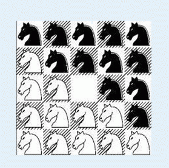

第一行有一个正整数T(T<=10)，表示一共有N组数据。接下来有T个5×5的矩阵，0表示白色骑士，1表示黑色骑
士，*表示空位。两组数据之间没有空行。
在一个5×5的棋盘上有12个白色的骑士和12个黑色的骑士， 且有一个空位。在任何时候一个骑士都能按照骑
士的走法（它可以走到和它横坐标相差为1，纵坐标相差为2或者横坐标相差为2，纵坐标相差为1的格子）移动到空
位上。 给定一个初始的棋盘，怎样才能经过移动变成如下目标棋盘： 为了体现出骑士精神，他们必须以最少的步
数完成任务。

第一行有一个正整数T(T<=10)，表示一共有N组数据。接下来有T个5×5的矩阵，0表示白色骑士，1表示黑色骑
士，*表示空位。两组数据之间没有空行。
对于每组数据都输出一行。如果能在15步以内（包括15步）到达目标状态，则输出步数，否则输出－1。
2
10110
01*11
10111
01001
00000
01011
110*1
01110
01010
00100
7
-1